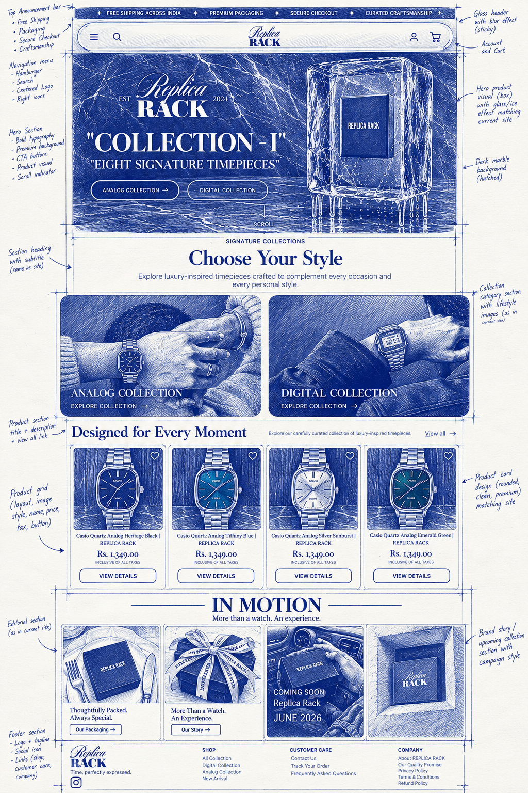
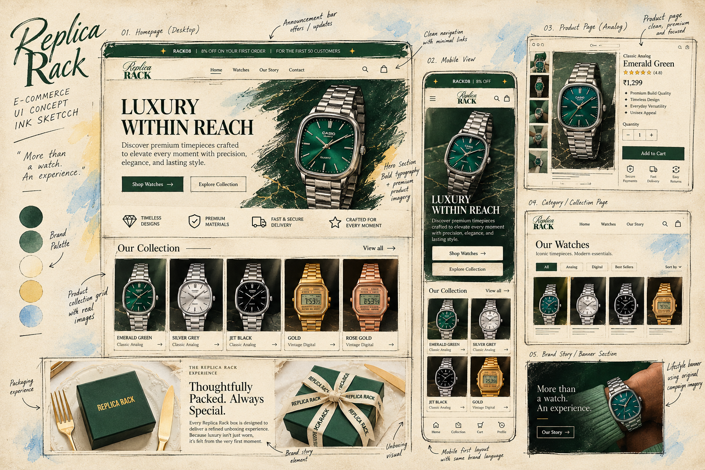
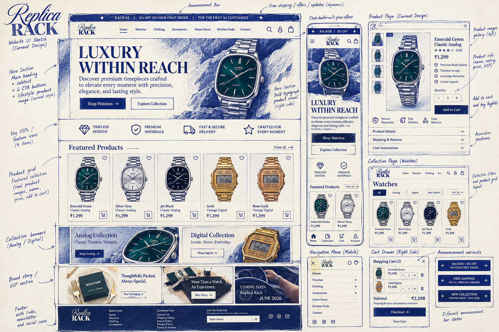

Make room
for curiosity.
DESIGN · DIGITAL · IDEAS
BUILDING SOMETHING PERSONAL
A PERSONAL SPACE FOR CREATIVE WORK
Ideas, made
tangible.
A growing collection of things imagined, designed, and brought to life.
a place to begin ↗
NOTES / 001
IDEAS IN PROGRESS
stay curious.
02
01THE FOUNDATION
A WORK IN PROGRESS
Every good thing
starts with a page.
This is the beginning: a personal corner of the internet built around ideas, visual stories, and the joy of making things well.
more to come, soon ✳DESIGN WITH INTENTION
DETAILS WITH CHARACTER
ROOM TO EXPLORE
✳02SELECTED WORK / CASE STUDYAN OPEN SKETCHBOOK ✳
BRAND · DIGITAL EXPERIENCE · ART DIRECTION
Replica Rack,
drawn into life.
A premium-accessible watch and lifestyle brand, explored through ink, interface studies, product storytelling, and a little bit of obsession with the details.

“Good design should feel
considered, not complicated.”
01 / THE IDEA
Build a distinct visual world around everyday timepieces: editorial, confident, and considered without losing the ease of shopping.
↗02 / THE PROCESS
Sketch the structure first. Explore hierarchy, product moments, collection paths, and the rhythm between image and whitespace.
↗

ONE BRAND. MANY LITTLE DECISIONS.✳STILL MAKING, STILL LEARNING.